Tutorial: Binding to Hierarchical Data
| RELATED VIDEOS | |
| [RadGridView for WinForms Hierarchy Overview](http://tv.telerik.com/winforms/radgrid/radgridview-winforms-hierarchy-overview) In this video you will learn the various ways you can display hierarchical data in a RadGridView. (Runtime: 12:13) |  |
The following tutorial demonstrates configuring the grid to display multiple
tables in a hierarchy. The example below uses the Northwind Categories table as
the parent table and lists the appropriate Product table records below each
category. The tutorial only uses the two tables, but the example can be
extended to larger numbers of child tables.
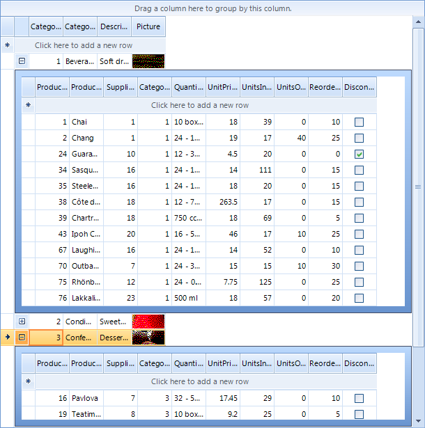
The task has two basic steps:
Configure datasources.
Define child grid view templates, one for each level in the
hierarchy.Define relations between parent and child tables.
Configure Datasources
Place a RadGridView component on a form. Set the Dock property to
Fill.In the Properties window locate the DataSource
property and click the arrow to open the list. Select the Add Project Data Source... link.
*
This step will display the Data
Source Configuration Wizard.
*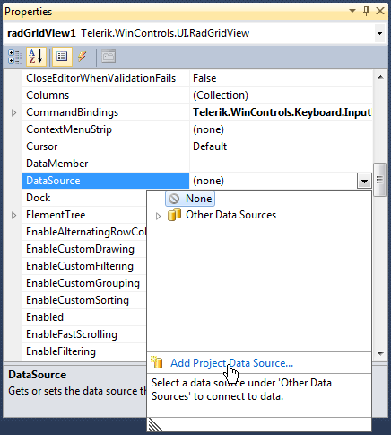In the Data Source Configuration Wizard, Choose a Data Source Type
page, select the Database icon. Click the
Next button.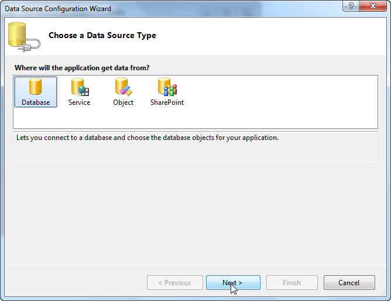In the Database Model page of the Data Source Configuration Wizard choose Database icon. Click the
Next button.
In the Choose Your data Connection page click the New
Connection... button. *
This step will display the Add
Connection dialog.
*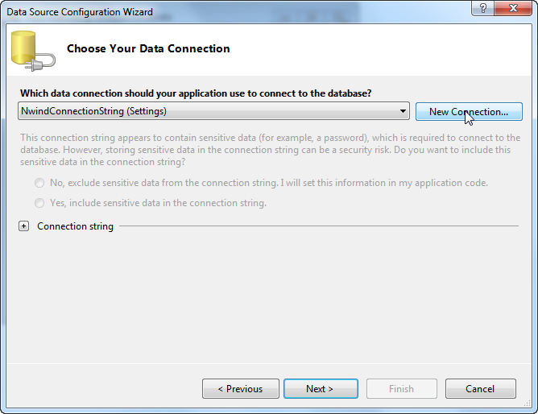In the Add Connection dialog click the Change...
button. This step will display the Change Data Source dialog.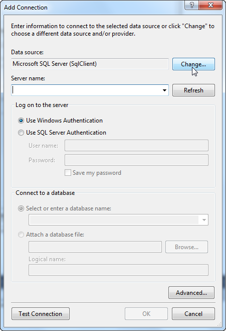Select the Microsoft Access Database File data
source. Click the OK button to close the Change Data
Source dialog.
Click the Browse button of the dialog to navigate to a database file.
After a file is selected, click the OK button to continue. 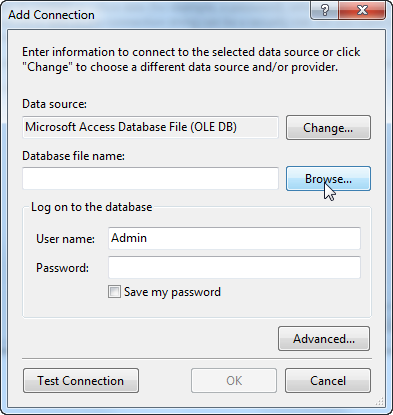Click the Next button of the dialog that appears and Next
button of the next dialog page to save the ConnectionString name: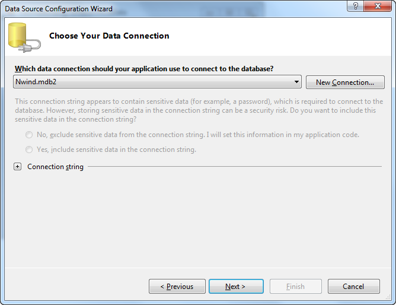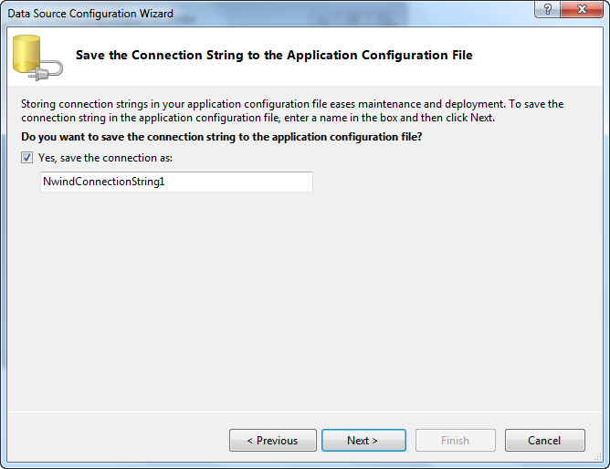In the Choose Your Database Objects page, select the
"Categories" and "Products" checkboxes.
Click the Finish button to close the Data Source
Configuration Wizard.
In the Visual Studio Properties window for the grid
DataSource property select the "Products" table. *
This
step will create DataSet, BindingSource and TableAdapter objects for the
products table.
*
In the Visual Studio Properties window for the grid
DataSource property select the "Categories" table.
*
This step will create DataSet, BindingSource and TableAdapter objects
for the categories table.
*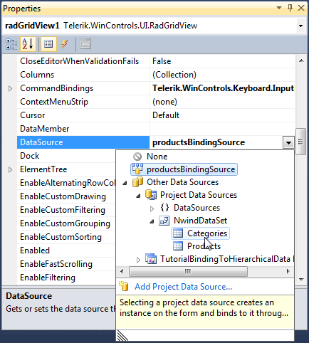The project design should look similar to the screenshot below. The
RadGridView DataSource property should be left to point at the binding source of the Categories
table. Note the new data components in the component tray under the design
surface.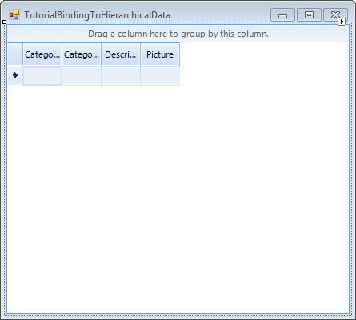
Define Child Templates
In the Properties Window click the ellipses for
the Templates
property. *
This step will display the GridViewTemplate Collection
Editor.
*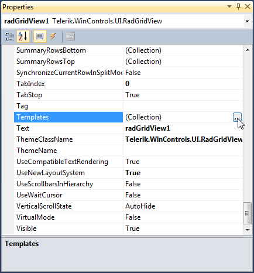In the GridViewTemplate Collection Editor, click the
Add button to add a child grid view template. In the
properties for the new grid view template, use
the DataSource property drop down to locate and
select the binding source of the datatable "Products".
Click the OK button to
close the dialog.
Define relations
In the Properties Window click the ellipses for the grid
Relations property. *
This step will display the
GridViewRelation Collection Editor.
*
In the GridViewRelation Collection Editor, click the
Add button to add a relation. *
The relation will
describe the parent/child relationship between the category data (parent
table) and the products (child table) for each category.
*Set the RelationName property to
"CategoryProduct".Set the GridViewRelation ChildTemplate property to the
child grid view template (created earlier in the GridViewTemplate
Collection Editor) using the drop down list. 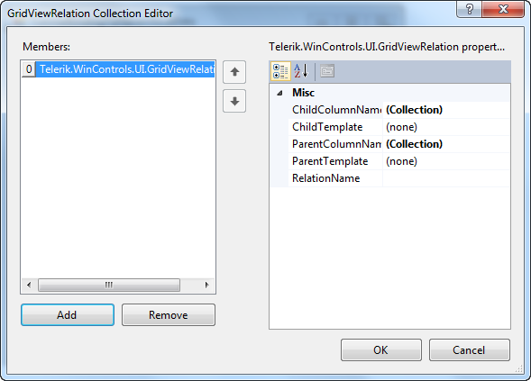Set the ParentTemplate property to the grid view
MasterTemplate.Click the ellipses for the ChildColumnName property.
This step will display the ColumnName Collection Editor.In the ColumnName Collection Editor click the Add
button and set the column Name property to "CategoryID".
Click the OK button to close the dialog.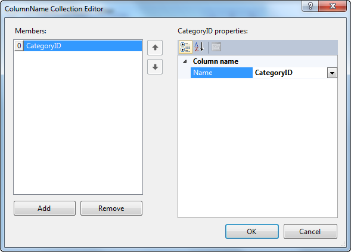Click the ellipses for the ParentColumnName property.
In the ColumnName Collection Editor click the Add button
and set the column Name property to "CategoryID". Click
the OK button to close the dialog.Press F5 to run the application.